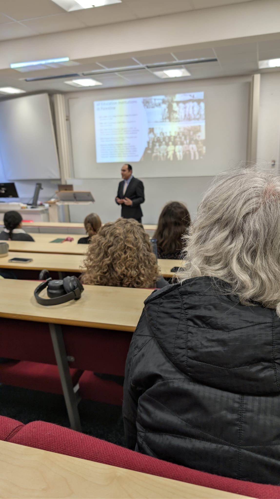
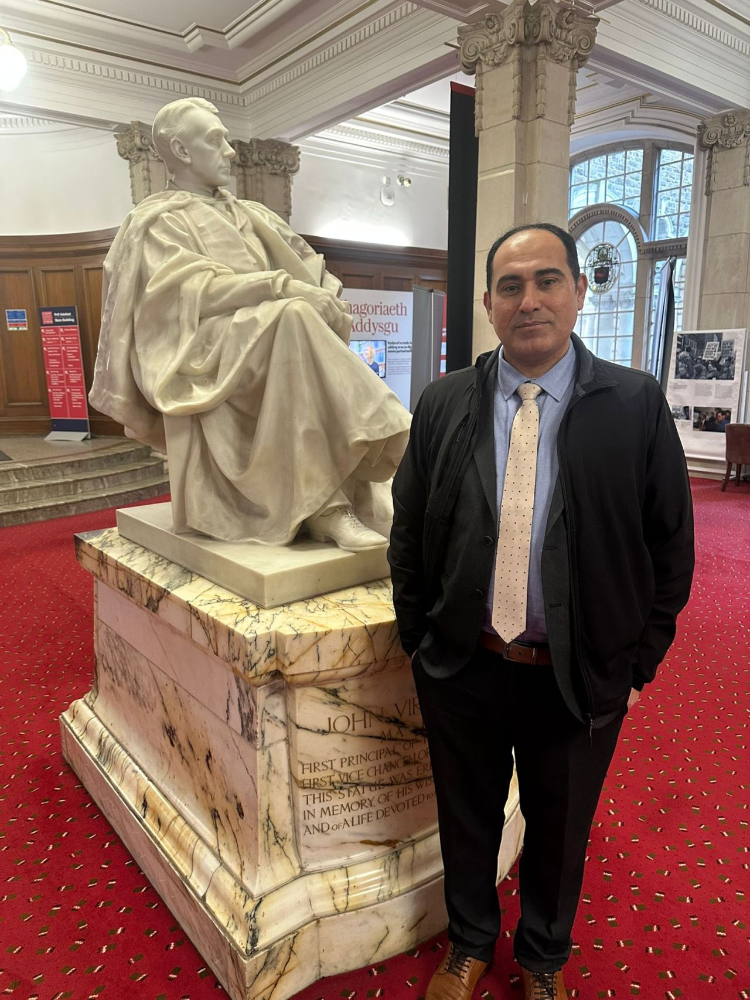

Invited Talks
Cardiff University Lecture Examines Scholasticide, Media Narratives, and the Human Cost of War
Dr. Wesam Amer delivered a keynote-style lecture at Cardiff University, drawing on his experiences as a displaced academic from Gaza to examine scholasticide, media narratives, and AI-driven propaganda. Through a powerful research-led presentation, he brought international attention to the systematic erosion of education, knowledge, and intellectual life in conflict settings.
Dr. Wesam Amer addressed students and academics at Cardiff University, presenting research that explored the impact of war on education, knowledge production, and public understanding of conflict. Combining scholarly analysis with lived experience as a displaced academic from Gaza, Dr. Amer delivered a lecture examining the destruction of educational institutions, the role of media narratives, and the growing influence of artificial intelligence in information warfare.
At the centre of the presentation was the concept of scholasticide, defined as the systematic destruction of educational systems, knowledge institutions, and intellectual life during conflict. Dr. Amer argued that the consequences extend far beyond the physical loss of schools, universities, libraries, and archives. He emphasized how the erosion of educational infrastructure affects the long-term social, cultural, and intellectual foundations of societies.
A key contribution of the lecture was Dr. Amer's discussion of what he described as “psychocide”, a process through which displacement becomes an ongoing psychological and emotional condition rather than a single event. He examined how academics, students, and families attempt to continue teaching, learning, and conducting research while facing prolonged uncertainty, insecurity, and separation from their communities.
The presentation also explored the influence of Western media narratives and AI-generated propaganda in shaping global perceptions of war. Dr. Amer highlighted the ways communication technologies increasingly affect international understanding of conflict, legitimacy, and public opinion.
By bringing together academic research, communication studies, and firsthand testimony, Dr. Amer provided audiences at Cardiff University with a deeper understanding of the challenges facing higher education and knowledge systems in conflict-affected areas. The event also offered an opportunity for discussion about the responsibilities of universities, researchers, and media institutions in protecting knowledge, preserving historical memory, and supporting academic communities under threat.


